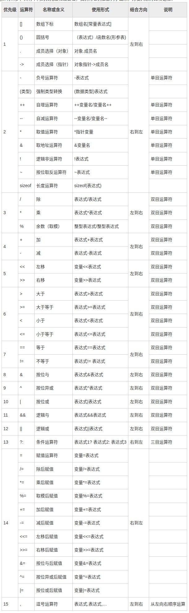

C小程错题整理¶
约 1864 个字 350 行代码 预计阅读时间 11 分钟
判断¶
-
C程序中定义的变量，代表内存中的一个存储单元。 True
-
执行以下程序段，
sum的值是55。 False -
C语言中的所有语句都必须以分号结束。 True
-
若变量已正确定义，执行以下
while语句将陷入死循环。 False -
以下程序段的功能是输出1～100之间每个整数的各位数字之和。 False(死循环)
-
08是正确的整型常量。 False -
表达式
~(~2<<1)的值是5。 True -
表达式
(z=0, (x=2)||(z=1),z)的值是1。 False -
运算符
“+”不能作为单目运算符。 False -
自动变量如果没有赋值，其值被自动赋为0。 False （auto != statics)
-
为了检查以下省略
True (需检查边界值)else的if语句的分支是否正确，至少需要设计3组测试用例，即grade的取值至少有三组（小于、大于、等于60）。 -
C语言中，大小写字母
'A'，'B'，'C'，…，'Z' ，'a'，'b'，'c'，…，'z'的ASCII码按升序连续排列。False (连续?)
-
设变量已正确定义，执行以下程序段，顺序输入三个字符
False (三个字符'Q'，则输出Q。'Q') -
一维数组定义的一般形式如下：
数组元素引用的一般形式如下：
在引用数组元素时，下标的合理取值范围是[0，数组长度-1]，下标不能越界。True
-
二维数组定义的一般形式如下，其中的类型名指定数组名的类型。
False (类型名指定数组中每个元素的类型)
-
二维数组定义的一般形式如下，其中的行长度和列长度都是整型常量表达式。
True (允许空格、换行)
-
引用二维数组的元素要指定两个下标，即行下标和列下标，一般形式如下。
False
-
假设结构指针p已定义并正确赋值，其指向的结构变量有一个成员是int型的num，则语句
*p.num = 100;是正确的。 False(优先级) -
表达式 (z=0, (x=2)||(z=1),z) 的值是1。 False(短路)
-
运行包含以下代码段的程序将可能进入死循环。
False(溢出)
选择¶
-
(多)以下程序段（ ）的功能是：输入一批整数，用负数作为输入的结束标志，统计其中大于
85的数据个数。 ADA. int count = 0, score; scanf("%d", &score); while (score >= 0) { if (score > 85) { count++; } scanf("%d", &score); } printf("%d\n", count); B. int count = 0, score; scanf ("%d", &score); while (score >= 0) { scanf("%d", &score); if (score > 85) { count++; } } printf("%d\n", count); C. int count = 0, score; while (score >= 0) { scanf("%d", &score); if (score > 85) { count++; } } printf("%d\n", count); D. int count = 0, score; while (1) { scanf("%d", &score); if (score < 0) break; if (score > 85) { count++; } } printf("%d\n", count); -
下面的程序段输出是（ ）。 D
-
下面的程序段输出是（ ）。 B
-
阅读以下程序段，如果从键盘上输入
1234567<回车>，则程序的运行结果是（ ）。 D -
阅读以下程序段，如果从键盘上输入
abc<回车>，则程序的运行结果是（ ）。A -
已知字符
'A'的ASCII码是65，分别对应八进制数101和十六进制数41，以下（ ）不能正确表示字符'A'。 D
-
设以下变量均为int类型，表达式的值不为
9的是（）。 C -
运算符（ ）的优先级最高。 A
-
执行下面程序中的输出语句后，输出结果是（ ）。 B
-
以下关于函数叙述中，错误的是（ ）。 B (不定参函数，隐式转换)
A.函数未被调用时，系统将不为形参分配内存单元
B.实参与形参的个数必须相等，且实参与形参的类型必须对应一致
C.当形参是变量时，实参可以是变量、常量或表达式
D.如函数调用时，实参与形参都为变量，则这两个变量不可能占用同一内存空间
-
(多)对于以下两个程序段，下列叙述正确的是（ ）。 ACF
A.在程序段1和程序段2中，语句
y = x + 1;的执行条件皆为满足x<1。B.在程序段1和程序段2中，语句
y = x + 1;的执行条件皆为满足x<2。C.在程序段1中，语句
y = x + 2;的执行条件是满足x>=2。D.在程序段1中，语句
y = x + 2;的执行条件是满足x>=1且x<2。E.在程序段2中，语句
y = x + 2;的执行条件是满足x>=2。F.在程序段2中，语句
y = x + 2;的执行条件是满足x>=1且x<2。 -
(多)设变量已正确定义，以下（）是合法的
switch语句。 ACDA. switch (op) { default: printf("Error\n"); break; } B. switch (op) { case '*': printf("%d\n", value1 * value2); break; case '+': printf("%d\n", value1 + value2); break; case '-': printf("%d\n", value1 - value2); break; case '*': printf("%d\n", value1 * value2); break; default: printf("Error\n"); break; } C. switch ('/') { case '*': printf("%d\n", value1 * value2); break; case '-': printf("%d\n", value1 - value2); break; case '+': printf("%d\n", value1 + value2); break; default: printf("Error\n"); break; } D. switch (op+1) { default: printf("Error\n"); break; case '*': printf("%d\n", value1 * value2); break; case '+': printf("%d\n", value1 + value2); break; } E. switch (op) { case op == '+': printf("%d\n", value1 + value2); break; default: printf("Error\n"); break; } -
(多)设变量已正确定义，以下（）是合法的C语句。 AC
```C A. if ( n <= 10 );
B.
switch (k) {
case 1: printf("one"); break;
case 2: printf("two"); break;
case 1: printf("one"); break;
default: printf("zero"); break;
}
C.
switch (k % 2) {
default: printf("zero"); break;
case 1: printf("one");
case 1+1: printf("two");
}
D.
n = 10;
switch (k) {
case n%3: printf("one");
case n%4: printf("two");
default: printf("zero");
}
```
-
(多)选项（ ）与以下字符数组定义等价。 ABD
以下能正确定义数组并正确赋初值的语句是（）。 D C中改为static char s[6] = {'H', 'a', 'p', 'p', 'y', '\0'}; A.static char s[6] = {'H', 'a', 'p', 'p', 'y'}; B.static char s[6] = "Happy"; C.static char s[6] = {"Happy"}; D.static char s[6] = {'H', 'a', 'p', 'p', 'y', 0};int c[][2]={{1,2},{3,4}}则可 -
以下选项中，对基本类型相同的指针变量不能进行运算的运算符是 ( )。 A 指针相加无意义 相减为两指针相隔元素数
A.+
B.-
C.=
D.==
-
对于以下程序段，则叙述正确的是（ ）。 D
A.s和p完全相同B.数组
s中的内容和指针变量p中的内容相等C.数组
s的长度和p所指向的字符串长度相等D.
*p与s[0]相等 -
对于以下定义，错误的
scanf函数调用语句是（）。 A -
以下程序的输出结果是（ ）。 C
struct stu{ int x; int *y; } *p; int dt[4] = {10, 20, 30, 40}; struct stu a[4] = {50, &dt[0], 60, &dt[1], 70, &dt[2], 80, &dt[3]}; int main() { p=a; printf("%d,", ++p->x); printf("%d,", (++p)->x); printf("%d", ++(*p->y)); return 0; }A.10,20,20
B.50,60,21
C.51,60,21
D.60,70,31
-
对于以下结构定义，
(*p)->str++中的++加在（）。 DA.指针
str上B.指针
p上C.
str指向的内容上D.语法错误
-
在“文件包含”预处理语句的使用过程中，当#include后面的文件名用双引号括起来时，寻找被包含文件的方式是( )。 B(用<>时选A)
A.直接按系统设定的标准方式搜索目录
B.先在源程序所在目录搜索，再按系统设定的标准方式搜索
C.仅仅搜索源程序所在目录
D.仅仅搜索当前目录
-
下面说法中正确的是（）。 A(题目可能存在问题)
A.若全局变量仅在单个C文件中访问，则可以将这个变量修改为静态全局变量，以降低模块间的耦合度
B.若全局变量仅由单个函数访问，则可以将这个变量改为该函数的静态局部变量，以降低模块间的耦合度
C.设计和使用访问动态全局变量、静态全局变量、静态局部变量的函数时，需要考虑变量生命周期问题
D.静态全局变量使用过多，可那会导致动态存储区（堆栈）溢出
(B选项：仅仅由单个函数访问，不存在模块耦合度问题
C选项：动态全局变量，静态全局变量，静态局部变量的生命周期都是整个程序运行期间，跟函数设计没有关系
D选项：静态全局变量存储于全局（静态）数据区)
-
若fopen()函数打开文件失败，其返回值是（ ）。 C(成功返回file地址) A.1 B.-1 C.NULL D.ERROR
-
若读文件还未读到文件末尾， feof()函数的返回值是（ ）。 B(结束为1) A.-1 B.0 C.1 D.非0
-
fputc(ch,fp) 把一个字符ch写到fp所指示的磁盘文件中，若写文件失败则函数的返回值为（ ）。 C(成功为ch) A.0 B.1 C.EOF D.非0
-
缓冲文件系统的文件缓冲区位于（）。 C A.磁盘缓冲区中
B.磁盘文件中
C.内存数据区中
D.程序文件中
-
直接使文件指针重新定位到文件读写的首地址的函数是（） 。 C A.ftell() B.fseek()
C.rewind() D.ferror()
填空¶
-
若变量已正确定义，执行以下程序段，并回答下列问题。请注意，直接填数字，前后不要加空格等任何其他字符。
语句①执行了?次语句②执行了?次
循环体语句共执行了?次
当循环结束时，变量
i的值是?10 1 10 11
-
若变量已正确定义，写出以下程序段的运行结果。
输入1 2 3 0 -1，输出输入
1 0 2 3 -1，输出输入
1 2 3 -1 9，输出2#3#0#-1#
0#2#3#-1#
2#3#-1#
-
若变量已正确定义，写出以下程序段的运行结果。
输入scanf("%d", &m); limit = sqrt(m) + 1; for(i = 2; i <= limit; i++){ if (m % i == 0) { printf("No"); } else { printf("Yes"); } }9，输出输入
4，输出YesNoYes
NoYes
-
写出以下程序的运行结果。请注意，直接填数字或者字符，前、后和中间不要加空格。
#include <stdio.h> int main(void) { int c1 = 0, c2 = 0; char ch; while ((ch = getchar()) != '#') { switch(ch){ case 'a': case 'h': c1++; default: c2++; } } printf("c1=%d,c2=%d\n", c1, c2); /* 中间、前、后都没有空格 */ return 0; }输入
china#，输出（）
c1=2,c2=5 -
写出以下程序段的运行结果。请注意，直接填单词、字符或者两者的组合，前后不要加空格等任何其他字符。
输入50，输出输入
60，输出输入
90，输出Fail?
Fail?
Fail?
-
假设整型数据用两个字节表示，则用二进制表示-127的原码为？反码为？补码为？
1000000001111111 1111111110000000 1111111110000001
-
以下程序的运行结果是
#include<stdio.h> struct ps { double i; char arr[24]; }; int main() { struct ps s[3], *p1, *p2; p1=s; p2=s+2; printf("%d,%d\n", p2-p1, sizeof(struct ps)); /* 输出数据之间没有空格分隔 */ } return 0;2,32
-
以下程序的运行结果是
#include <stdio.h> struct st { char c; char s[80]; }; struct st a[4] = {{'1',"123"}, {'2',"321"}, {'3',"123"}, {'4',"321"}}; char *f(struct st *t); int main() { int k; for (k = 0; k < 4; k++) { printf("%s", f(a+k)); } return 0; } char *f(struct st *t) { int k = 0; while(t->s[k] != '\0'){ if (t->s[k] == t->c) { return t->s+k; } k++; } return t->s; }123213321
-
运行以下程序段，第1行输出?，第2行输出?
struct { int a; int *b; } s[4], *p; int i, n = 1; for (i = 0; i < 4; i++) { s[i].a = n; s[i].b = &s[i].a; n = n + 2; } p = &s[0]; printf("%d\n", ++*p->b); p++; printf("%d,%d\n", (++p)->a, (p++)->a); /* 输出数据之间没有空格分隔 */2
7,3
(
printf从右向左计算) -
程序输出？
输出： 0.667 (会四舍五入)
-
阅读以下程序并回答问题。
#include <stdio.h> void f2(int n) { int s = 0; while (n--) { s += n; } printf("%d,%d\n", n, s); /* 中间没有空格 */ } int main(void) { f2(4); return 0; }输出： -1,6(not 4,6)
-
阅读以下程序并回答问题。
#include <stdio.h> int f2() { static int k = 1, s; s = s + k; k++; return s; } int main(void) { int i; for (i = 1; i <= 3; i++) { f2(); } printf("%d\n", f2()); return 0; }输出： 10(not 4) //静态变量不会重新赋初值
-
根据数据存储的编码形式，C语言中处理的数据文件通常为?文件和?文件两种。
-
C语言中，在成功打开一个文件后，可以使用?来获取文件缓冲区的FILE结构信息。
-
fgets(s,n,fp);语句用来从fp所指示的文本文件中读取字符串s，该语句最多读取?个字符。
n-1
零零散散¶
- 逗号表达式 从左到右计算，返回值为最后一个表达式的值
- 取反后需转为原码 如对10取反为-11
- strcpy() 后面字符串复制到前面字符串 覆盖
- 文件打开参数 https://www.cnblogs.com/kangjianwei101/p/5220021.html
- 实数存储方式 符号 阶码(移码表示的乘幂指数) 尾数 没有基数(乘幂的底数)
- 二维指针
*(*(p+1)+1)表示p[1][1] - 指针数组和数组指针
int *p1[5]每个元素都是指针int (*p2)[5]一个指向数组的指针 - sizeof()表达式的值在编译时确定。编译器不计算其中表达式的值，仅将其替换为对应类型。
-
scanf遇到空白字符截止，为输入一行可使用 scanf("[^\n]",str) 或gets()。
注意：scanf("%s", s)输入 "How are you?" 遇到空格截断，只得到How。
-
位运算是根据内存中的二进制位进行运算的
- true false等不是保留关键字
- 左移运算符<<用来把操作数的各个二进制位全部左移若干位，高位丢弃，低位补0。
- 右移运算符>>用来把操作数的各个二进制位全部右移若干位，低位丢弃，高位补 0 或 1。如果数据的最高位是 0，那么就补 0；如果最高位是 1，那么就补 1。
补个优先级表格¶
